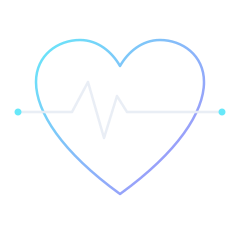
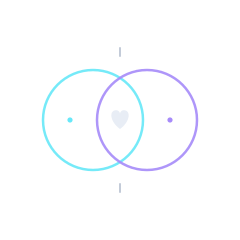

About
Designing digital health that is usable, evidence-based, and equitable.

With over a decade of UX research and design experience in complex systems, I spent recent years deepening my expertise in public and community health. I recently completed an M.S. in Community Health Education at Wayne State University (Summa Cum Laude) and earned the Certified Health Education Specialist (CHES) credential. I also hold CAHIMS certification in healthcare information and management systems. These credentials reflect my commitment to understanding how people interact with technology and how digital tools can support better health outcomes, health literacy, and equitable access—especially for underserved populations.
My background spans usability research and human factors work in government, automotive, and healthcare-adjacent systems, where safety and reliability are critical. During my career transition, I deepened my expertise through graduate coursework in public health and hands-on experience as a volunteer in a University of Michigan Health medical procedures unit, where I gained direct insight into clinical workflows. I also completed coursework in medical and cultural anthropology to strengthen my understanding of cultural contexts in health. This combination of rigorous UX methods, clinical insight, cultural competence, and training in health behavior, program evaluation, and health informatics allows me to approach digital health challenges from both the user experience and public health perspectives. Colleagues have consistently highlighted the clarity and impact of this approach — one noted that I ‘did an excellent job of contextualizing my findings so that clients could understand and clearly visualize the usability issues and proposed solutions’ and that recommendations were ‘going to be integrated.’ Another observed my ‘maturity and flexibility’ and ‘grace under considerable pressure’ when navigating complex group dynamics.

I’m particularly interested in designing digital tools that serve patients, providers, and communities by translating evidence-based health interventions into usable, equitable, and sustainable experiences. My work draws from graduate training in program planning, measurement and evaluation of health education programs, and implementation science. I focus on reducing cognitive and operational burden for clinicians and community health workers, improving health literacy for diverse populations, and addressing equity gaps in mental health support, trauma-informed care, chronic disease management, and community-based prevention. I’m currently building a portfolio of healthcare UX projects that explore how digital platforms can support the adoption and sustainment of community health interventions, enable high-fidelity delivery and longitudinal evaluation of mental health programs, and improve well-being for caregivers and care dyads — all while remaining transparent, ethical, and deeply human-centered.
Beyond the Screen
When I’m not designing or researching, I’m often outdoors with my camera. Nature photography sharpens my observational skills, patience, and attention to subtle patterns — the same abilities I bring into every UX research session and interface I design.
“On several recent projects for federal government websites, Jessie welcomed the idea of helping the real-world citizens who use these sites… When Jessie presented her work… she elicited client comments like ‘bravo on all counts,’ ‘[this was] really, really helpful’ and ‘[these recommendations are] going to be integrated.’”
“Another noteworthy personality trait I’ve been able to observe in Ms. Smallenburg is, surprisingly enough, flexibility — a trait which on the face of it might seem at odds with her being a stickler for context and a consummate preparer. I was surprised and delighted by the maturity and flexibility that Jessie demonstrated in small group conflict situations when figuring out how to move forward. The grace she showed under considerable pressure impressed me.”
Whether you’re building patient-facing tools, clinical decision support, or community health platforms, I bring a rare blend of research depth, design craft, and domain knowledge in user experience, health education, and public health systems.
Let’s connect on LinkedIn if you’re working on meaningful digital health work — or want to explore how rigorous, equity-informed UX can strengthen your product or initiative.